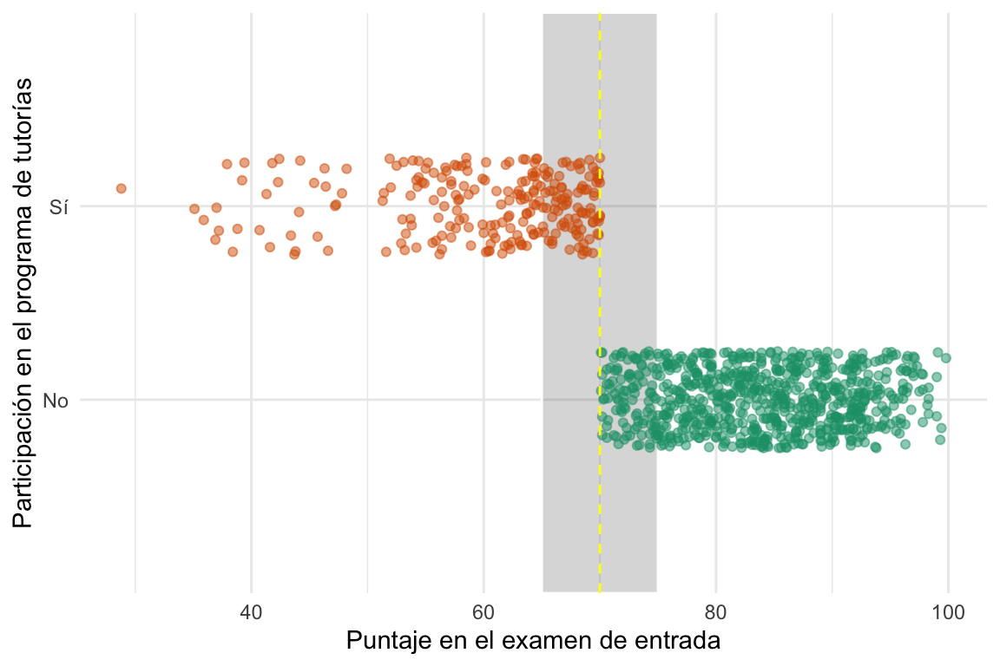

Lo que sigue no es una versi√≥n final y está en construcci√≥n üöß
8.1 El problema de controlar por variables no observables
Al igual que en Diffs-in-Diffs, usamos el contexto para aislar el efecto causal en nuestro problema.
Regresión discontinua: Una regla arbitraria define la asignación de grupos.
Muy común en la asignación a, por ejemplo, programas sociales (por ejemplo, ayudas directas).
A partir de cierto, por ejemplo, ingreso, se puede acceder a un beneficio de un programa social.
Hablar del DAG
Comentar el ejemplo de Turnout
8.1.1 Un ejemplo to rule them all
Ver el código
tutoring <-read_csv(here("data/tutoring_program.csv")) %>%mutate(tutoring =factor(tutoring, levels =c(0, 1), labels =c("No", "Sí")))#> Rows: 1000 Columns: 4#> ── Column specification ─────────────────────────────────────────────────────#> Delimiter: ","#> dbl (3): id, entrance_exam, exit_exam#> lgl (1): tutoring#> #> ℹ Use `spec()` to retrieve the full column specification for this data.#> ℹ Specify the column types or set `show_col_types = FALSE` to quiet this message.
Ver el código
# Determinemos si el proceso de asignación al tratamiento depende de una regla ####ggplot(tutoring, aes(x = entrance_exam, y = tutoring, color = tutoring)) +# Hacemos los puntos semitransparentes y los movemos un pocogeom_point(size =1.5, alpha =0.5, position =position_jitter(width =0, height =0.25, seed =1234)) +# Ponemos una línea vertical en el umbralgeom_vline(xintercept =70, color ="steelblue", linetype ="dashed") +# Labelslabs(x ="Puntaje en el examen de entrada", y ="Participación en el programa de tutorías") +# Sacó la leyenda de colorguides(color =FALSE) +# Colores más chetosscale_color_brewer(palette ="Dark2") +# Theme sin fondo gristheme_minimal()#> Warning: The `<scale>` argument of `guides()` cannot be `FALSE`. Use "none" instead#> as of ggplot2 3.3.4.

Ver el código
rect_claro <-tibble(xmin =60, xmax =80, ymin =0, ymax =3)rect_oscuro <-tibble(xmin =65, xmax =75, ymin =0, ymax =3)ggplot(tutoring) +# Los rectángulosgeom_rect(data = rect_claro, aes(xmin = xmin, xmax = xmax, ymin = ymin, ymax = ymax), fill ="gray20", color ="white", alpha = .2) +geom_rect(data = rect_oscuro, aes(xmin = xmin, xmax = xmax, ymin = ymin, ymax = ymax), fill ="gray20", color ="gray80", alpha = .4) +# Hacemos los puntos semitransparentes y los movemos un pocogeom_point( aes(x = entrance_exam, y = tutoring, color = tutoring),size =1.5, alpha =0.5, position =position_jitter(width =0, height =0.25, seed =1234)) +# Ponemos una línea vertical en el umbralgeom_vline(xintercept =70, color ="yellow", linetype ="dashed") +# Labelslabs(x ="Puntaje en el examen de entrada", y ="Participación en el programa de tutorías") +# Sacó la leyenda de colorguides(color =FALSE) +# Colores más chetosscale_color_brewer(palette ="Dark2") +# Theme sin fondo gristheme_minimal()
Ver el código
datasummary_skim(data = tutoring, by ="tutoring", output ="gt") |>gt_highlight_rows(rows =c(3,4), fill ="lightyellow",font_weight ="bold")#> Warning: Inline histograms in `datasummary_skim()` are only supported for#> tables produced by the `tinytable` backend.#> Warning: `type='all'` is only supported for the `tinytable` backend. Set the#> `type` argument explicitly to suppress this warning.
tutoring
Unique
Missing Pct.
Mean
SD
Min
Median
Max
id
No
759
0
501.2
289.9
1.0
507.0
1000.0
Sí
241
0
498.3
285.9
3.0
479.0
999.0
entrance_exam
No
261
0
83.9
7.3
70.1
83.9
99.8
Sí
156
0
60.1
8.7
28.8
63.0
70.0
exit_exam
No
286
0
66.5
7.5
44.0
66.6
84.5
Sí
162
0
65.2
7.9
42.8
65.4
80.4
Ver el código
# Ahora miremos como se comporta la variable outcomes en función de la running variable ####tutoring_centered <- tutoring |>mutate(entrance_centered = entrance_exam -70)modelo_lm <-lm(exit_exam ~ entrance_centered + tutoring, data = tutoring_centered)ggplot(tutoring, aes(x = entrance_exam, y = exit_exam, color = tutoring,fill = tutoring)) +geom_point(size =1.5, alpha = .3) +# Agregamos una linea basada en un modelo lineal para la running variable menor a 70geom_smooth(data =filter(tutoring, entrance_exam <=70), method ="lm") +# Agregamos una linea basada en un modelo lineal para la running variable mayor a 70geom_smooth(data =filter(tutoring, entrance_exam >70), method ="lm") +# Ponemos una línea vertical en el umbralgeom_vline(xintercept =70, color ="steelblue", linetype ="dashed") +# Un segmento con el efecto del modelogeom_segment(aes(x =70, y = modelo_lm$coefficients[1], xend =70, yend = modelo_lm$coefficients[1] + modelo_lm$coefficients[3]), color ="darkblue", linewidth =2) +annotate("label", x =75, y = modelo_lm$coefficients[1] + modelo_lm$coefficients[3]/2,label ="LATE", color ="darkblue", size =4, hjust =0.5) +# Las lableslabs(x ="Puntaje en el examen de entrada", y ="Puntaje en el examen de salida",color ="Participó en la tutoría",fill ="Participó en la tutoría") +# Colores más chetosscale_color_brewer(palette ="Dark2") +scale_fill_brewer(palette ="Dark2") +# Theme sin fondo gristheme_minimal() +theme(legend.position ="top")#> `geom_smooth()` using formula = 'y ~ x'#> `geom_smooth()` using formula = 'y ~ x'